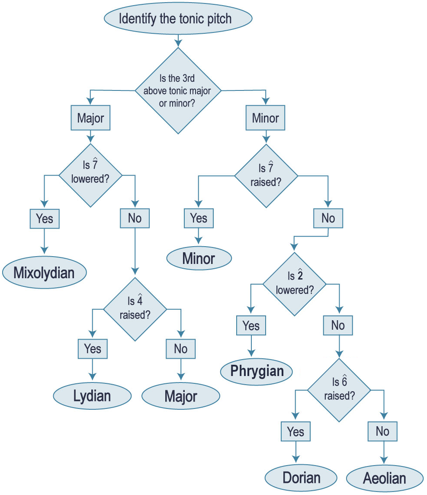

Open Music Theory：繁體中文版
自然音調式
重點整理
- 教會調式起源於中古時期，以自然音音集、終止音、其他音與終止音的關係，以及音域來分類。
- 在20、21世紀，自然音調式也可理解為大音階輪換起點後形成的音階，不限定音域，但仍具有音高類中心，也就是主音。
- 非西方音樂文化有各自組織調式音高的方法。這些「調式」通常不只是音集，還可能包含特定的旋律姿態、裝飾手法與使用慣例，例如印度raga、阿拉伯maqam、峇里島pelog與slendro、猶太祈禱調式、波斯dastgah及日本音階。
- 以同主音關係理解各調式，著重其特徵音：
- 以關係調式理解，也就是使用同一組音、改變主音：
- 伊奧尼安：從C開始的白鍵音。
- 多利安：從D開始的白鍵音。
- 弗里吉安：從E開始的白鍵音。
- 利底安：從F開始的白鍵音。
- 混合利底安：從G開始的白鍵音。
- 愛奧利安：從A開始的白鍵音。
本書從不同角度討論調式，也可參閱〈自然音調式與半音「音階」入門〉的一般介紹、爵士篇〈和弦—音階理論〉、流行音樂篇〈調式圖式〉，以及20、21世紀音樂篇〈以調式、音階與音集分析〉。
20世紀之交，許多作曲家重新思考音樂的素材。此前約兩百年間，大、小調音樂主導西方古典音樂；我們以「共通寫作時期」稱呼那段時期，部分原因正是1900年前後出現了變化。談到這些變化，也常會提及「不協和音的解放」，以及越來越激進的半音手法如何催生無調性。音樂史當然比這種簡述複雜得多，但其中仍有幾分道理：許多作曲家確實想重新發明創作的素材與方法，類似同時期抽象藝術的興起。
調式的運用也是這些探索的一部分，涵蓋許多擴充作曲素材的方法。本章介紹其中一些有趣、知名且重要的選擇，並像許多作曲家一樣，先回顧更早的音樂實踐。
查看英文原文
Key Takeaways
- Church modes originated in the medieval era, and are classified by their use of the diatonic collection, their final, the relationships of other pitches to that final, and their range.
- In the 20th and 21st centuries, diatonic modes are also understood as rotations of the major scale, without range requirements, but with the concept of a pitch-class center or tonic.
- Non-Western musical cultures have their own methods of organizing pitch into modes. These "modes" are usually more than simple pitch collections and can include characteristic gestures, embellishments, and protocols for use. Examples include Indian raga, Arabic maqam, Balinese pelog and slendro, Jewish prayer modes, Persian dastgah, and Japanese scales.
- Modes, conceived in terms of parallel relationships, with an emphasis on the color notes of each mode:
- Ionian: Identical to major
- Mixolydian: Like major with a [latex]\downarrow\hat{7}[/latex]
- Lydian: Like major with a [latex]\uparrow\hat{4}[/latex]
- Aeolian: Identical to natural minor; no raised leading tone
- Dorian: Like natural minor with a [latex]\uparrow\hat{6}[/latex]
- Phrygian: Like natural minor with a [latex]\downarrow\hat{2}[/latex]
- Modes, conceived in terms of relative relationships:
- Ionian: White notes starting on C
- Dorian: White notes starting on D
- Phrygian: …starting on E
- Lydian: …starting on F
- Mixolydian: …starting on G
- Aeolian: …starting on A
This book covers modes from many different angles. For more information on modes, check Introduction to Diatonic Modes (general), Chord-Scale Theory (jazz), Modal Schemas (pop), and Analyzing with Modes, Scales, and Collections (20th-/21st-c.).
At the turn of the 20th century, many composers were rethinking the materials of music. This is one reason the term “common practice” is used to distinguish the major-minor music that dominated Western classical music for the 200 years or so prior—something changed around 1900. You’ll also hear talk of the "emancipation of the dissonance" connected to this, and the emergence of atonality out of ever-more-radical chromatic maneuvers. The history of music is much more complex than this simple take, but there is some truth to it: a lot of composers were interested in reinventing what and how they composed, similar to the emergence of abstract art around the same time.
The use of modes has a place in all of this, encapsulating many of the ways in which one can broaden the compositional palette. In this chapter, we’ll go through some of the most interesting, famous, and significant options, starting, as many composers did, by looking back to what came before.
大、小調在西方古典音樂中的主導地位，是從更早以調式為核心的實踐演變而來。這組調式常稱為教會調式、白鍵調式或葛利果調式。它們對應C大音階輪換起點後的排列，使用相同音集，但有不同的主音；在這個歷史語境下，更恰當的名稱是終止音。
- 自然音音集，以及各音之間的音程關係。
- 作為參照點的終止音。
- 調式中其他音相對於終止音的進一步階序關係。
- 旋律形態與音域。
| 正格調式 | 終止音 | 吟誦音 | 音域 | 變格調式 | 終止音 | 吟誦音 | 音域 |
|---|---|---|---|---|---|---|---|
| 多利安 | D | A | D–D | 變格多利安 | D | F | A–A |
| 弗里吉安 | E | C! | E–E | 變格弗里吉安 | E | A! | B–B |
| 利底安 | F | C | F–F | 變格利底安 | F | A | C–C |
| 混合利底安 | G | D | G–G | 變格混合利底安 | G | C! | D–D |
| + | |||||||
| 愛奧利安 | A | E | A–A | 變格愛奧利安 | A | C | E–E |
| 伊奧尼安 | C | G | C–C | 變格伊奧尼安 | C | E | G–G |
例1。歷史上的教會調式概覽。
Traditional church modes＝傳統教會調式。
- 左欄Dorian／Phrygian／Lydian／Mixolydian＝多利安／弗里吉安／利底安／混合利底安；
- 右欄Hypo-表示相應的變格。
- F＝終止音（final），T＝吟誦音（tenor），T!＝吟誦音位置的例外；
- 這些F、T是功能標記，不是音名。
Modes added by Glareanus, Dodecachordon (1547)＝Glareanus在《Dodecachordon》（1547）增列的調式：Aeolian／Ionian＝愛奧利安／伊奧尼安，右側為其變格。
- 正格終止音依序D、E、F、G、A、C，吟誦音A、C、C、D、E、G；
- 變格終止音相同，吟誦音F、A、A、C、C、E。
右上變格多利安音域為A₃至A₄，原文字表的G–A已另作校註。
例2。以五線譜整理歷史上的教會調式。
查看英文原文
Church Modes
The dominance of major and minor in Western classical music emerged out of an earlier practice centered on the use of modes. This collection of modes is often called church, white-note, or Gregorian modes. These modes correspond to rotations of the C major scale, using the same collection of pitches but a different tonic (more properly referred to as a final in this context).
This already introduces us to a fundamental tenet of what a mode generally comprises: both a diatonic collection of pitches and a final. These are the first two items on the list below, followed by two other particularly useful concepts for understanding church modes:
- The diatonic collection and the intervallic relationships between those pitches
- The final, which acts as a referential point
- Further hierarchical levels between the pitch in the mode and its final
- Melodic shapes and range
1–3 will be familiar from tonal music, but 4 may not be. Range is a defining characteristic of the church modes, as each mode has an authentic and a plagal version.
Example 1 summarizes the modes by their final, their tenor, and their range. Authentic modes are on the left, while plagal modes (those beginning with "hypo-") are on the right. Tenors are usually a fifth above the final in authentic modes and a third above the final in plagal modes (except where noted with an exclamation point). Example 2 provides the same summary, but in notation.
| Authentic mode | Final | Tenor | Range | Plagal mode | Final | Tenor | Range |
|---|---|---|---|---|---|---|---|
| Dorian | D | A | D–D | Hypodorian | D | F | G–A |
| Phrygian | E | C! | E–E | Hypophrygian | E | A! | B–B |
| Lydian | F | C | F–F | Hypolydian | F | A | C–C |
| Mixolydian | G | D | G–G | Hypomixolydian | G | C! | D–D |
| + | |||||||
| Aeolian | A | E | A–A | Hypoaeolian | A | C | E–E |
| Ionian | C | G | C–C | Hypoionian | C | E | G–G |
Example 1. The historical church modes summarized.
Example 2. The historical church modes summarized in notation.
〈自然音調式與半音「音階」入門〉也有自然音調式的概覽與相關作業。
20世紀重新把調式當作作曲材料時，保留了許多教會調式概念，也捨棄了一些區分。許多作品的音域超過八度，因此不再區分正格與變格（Hypo-調式）。此外，Glarean後來增列的愛奧利安與伊奧尼安，也與原先的正格教會調式同樣重要。
查看英文原文
Diatonic Modes in the 20th and 21st centuries
Another summary of diatonic modes (and assignments on them) can be found in Introduction to Diatonic Modes and the Chromatic "Scale."
When modes were revisited as a compositional concept in the 20th century, many concepts from church modes were maintained, while other distinctions were erased. The notion of authentic/plagal modes ("hypo-" modes) was dropped, as the range of many pieces spans more than one octave. Additionally, Glarean's later modes, aeolian and ionian, were just as important as the original authentic church modes.
特徵音
聆聽時，你可能覺得調式很像大調或小調，只是某些音作了升降變化；這些音就是特徵音。[1]主音上方三度是大三度或小三度，決定了調式偏向大調或小調的聽感。偏大調的有混合利底安與利底安；偏小調的有愛奧利安、多利安與弗里吉安。
例3列出各調式、主音上方三度的性質、用來區別大音階或自然小音階的特徵音，以及與C大調構成同主音關係或關係調式時的音列。
| 調式名稱 | 主和弦為大三和弦或小三和弦？ | 特徵音 | 與C大調同主音 | 與C大調使用相同音集 |
|---|---|---|---|---|
| 伊奧尼安（大調） | 大三和弦 | 無 | C D E F G A B C | C D E F G A B C |
| 多利安 | 小三和弦 | la [latex](\uparrow\hat6)[/latex] | C D E♭ F G A B♭ C | D E F G A B C D |
| 弗里吉安 | 小三和弦 | ra [latex](\downarrow\hat2)[/latex] | C D♭ E♭ F G A♭ B♭ C | E F G A B C D E |
| 利底安 | 大三和弦 | fi [latex](\uparrow\hat4)[/latex] | C D E F♯ G A B C | F G A B C D E F |
| 混合利底安 | 大三和弦 | te [latex](\downarrow\hat7)[/latex] | C D E F G A B♭ C | G A B C D E F G |
| 愛奧利安（自然小音階） | 小三和弦 | te [latex](\downarrow\hat7)[/latex]——不使用升高的導音 | C D E♭ F G A♭ B♭ C | A B C D E F G A |
例3。各調式的重要特徵。
例4簡要整理上述資訊，依主和弦是大三和弦或小三和弦將調式分組，有助於用聽覺辨認調式樂段，詳見下文。上排的[latex]\hat3[/latex]在主音上方大三度（do–mi），包括大調、混合利底安與利底安；下排的[latex]\hat3[/latex]在主音上方小三度（do–me），包括愛奧利安、多利安與弗里吉安。虛線弧線將各調式的特徵音，與大音階或自然小音階中對應的音連接起來。
- C major＝C大調；
- C mixolydian＝C混合利底安；
- C lydian＝C利底安；
- C aeolian (natural minor)＝C愛奧利安（自然小調）；
- C dorian＝C多利安；
- C phrygian＝C弗里吉安。
- 上排以大調比較B→B♭及F→F♯；
- 下排以自然小調比較A♭→A及D→D♭。
例4。依主和弦的大、小性質分組，特徵音以藍色標示。
注意，愛奧利安與自然小音階相同。討論20、21世紀的調式時，可特別指出愛奧利安避免使用升高的導音（ti，[latex]\uparrow\hat7[/latex]），而持續使用te（[latex]\downarrow\hat7[/latex]），以區別會運用升高導音的小調寫作。
查看英文原文
Color notes
As a listener, you may experience modes as sounding similar to major or minor, but with certain inflected notes—color notes.[1] Modes will sound major-ish or minor-ish based on the quality of the third above the tonic. The major-ish modes are mixolydian and lydian; the minor-ish modes are aeolian, dorian, and phrygian.
Example 3 lists each mode, the quality of the third above the tonic, its color note that distinguishes it from major/natural minor, and its pitches parallel and relative to C major.
| Mode name | Major tonic or minor tonic? | Color note | Mode, parallel to C major | Mode, relative to C major |
|---|---|---|---|---|
| Ionian (major) | Major | n/a | C D E F G A B C | C D E F G A B C |
| Dorian | Minor | la [latex](\uparrow\hat6)[/latex] | C D E♭ F G A B♭ C | D E F G A B C D |
| Phrygian | Minor | ra [latex](\downarrow\hat2)[/latex] | C D♭ E♭ F G A♭ B♭ C | E F G A B C D E |
| Lydian | Major | fi [latex](\uparrow\hat4)[/latex] | C D E F♯ G A B C | F G A B C D E F |
| Mixolydian | Major | te [latex](\downarrow\hat7)[/latex] | C D E F G A B♭ C | G A B C D E F G |
| Aeolian (natural minor) | Minor | te [latex](\downarrow\hat7)[/latex]—no raised leading tone | C D E♭ F G A♭ B♭ C | A B C D E F G A |
Example 3. Important characteristics of each mode.
Example 4 provides a brief summary of this information. The modes are grouped by whether the tonic chord is major or minor, which helps with aural identification of modal passages (as discussed further below). The top line shows modes whose [latex]\hat3[/latex] is a major third above tonic (do–mi): major, mixolydian, and lydian. The bottom line shows modes whose [latex]\hat3[/latex] is a minor third above tonic (do–me): aeolian, dorian, and phrygian. The dotted slurs connect the distinctive color note of each mode with its major/minor counterpart.
Example 4. Modes grouped by major vs. minor tonic, with color notes shown in blue.
Notice that aeolian is identical to the natural minor scale. When discussing modality in the 20th and 21st centuries, it can be useful to distinguish between aeolian, which would avoid the raised leading tone (ti, [latex]\uparrow\hat7[/latex]) and instead consistently use te ([latex]\downarrow\hat7[/latex]).
聽出調式主音
許多聽者受文化習慣影響，傾向把所有音樂聽成大調或小調。因此，20、21世紀作曲家若想營造調式聲響，往往會特別強調所選調式的主音。注意，這不一定需要強調主和弦！以下是作曲家在調式音樂中建立主音感的幾種方式：
- 反覆奏出主音。
- 以較長音值讓主音形成時值重音，包括用主音作持續低音。
- 讓主音落在拍節重音上。
- 把主音放在最低聲部。
- 在主音上形成終止。
查看英文原文
Hearing modal tonics
Because many listeners are so enculturated to hear all music as being major or minor, 20th and 21st century composers who wish to create a modal sound will often spend extra energy on emphasizing the tonic pitch of their chosen mode. (Note that this may or may not involve emphasizing a tonic chord!) Following are several ways in which composers may create a sense of tonic in modal music.
- repeating the tonic pitch
- agogic accents (using longer note values) on the tonic pitch, including using a drone of the tonic pitch
- metrical accents on the tonic pitch
- using the tonic pitch as the lowest pitch
- cadencing on the tonic pitch
辨認調式
若不常演奏或聆聽調式音樂，要辨認、區分各調式可能頗具挑戰。以下步驟可以區分本章討論的調式，例5將它整理為流程圖。
{kind=link}

先辨認主音，再問主音上方三度是大三度或小三度。
- 大三度一側：第七級降低嗎？是→混合利底安；
- 否→第四級升高嗎？是→利底安，否→大調。
- 小三度一側：第七級升高嗎？是→小調；
- 否→第二級降低嗎？是→弗里吉安；
- 否→第六級升高嗎？是→多利安，否→愛奧利安。
圖中Major／Minor指大、小調一側，Yes＝是，No＝否。
- 升降分別以同主音的大音階或自然小音階為基準；
- 此流程只區分本章列出的候選調式。
查看英文原文
Identifying modes
If you are not used to playing in and listening to modes, it can be daunting to identify and distinguish modes. Here is a step-by-step process for distinguishing all the modes discussed here, illustrated as a flowchart in Example 5.
1. 辨認主和弦的大、小性質。
先聽出主音，再聽整個主和弦：它的三音與根音形成大三度，還是小三度？這可以區分偏大調的調式（大調、混合利底安、利底安），與偏小調的調式（小調、愛奧利安、多利安，以及弗里吉安）。
查看英文原文
1. Identify the quality of tonic.
Listen for the tonic pitch. Then, listen for the whole tonic chord. Is the third of that chord major or minor? This distinguishes the major-ish modes (major, mixolydian, lydian) from the minor-ish modes (minor, aeolian, dorian).
2. 聽出並找出[latex]\hat{\mathsf{7}}[/latex]（ti或te）。
把[latex]\hat{7}[/latex]與大、小調作品中常見的導音ti比較：導音在主音下方半音。若[latex]\hat{7}[/latex]位於主音下方全音（te），就比導音低半音；在這套辨識流程中，這是作品至少暫時呈現調式聲響的線索。
若聽到大三和弦的主和弦，且[latex]\hat{7}[/latex]降低為te，便是混合利底安。
若聽到小三和弦的主和弦，且[latex]\hat{7}[/latex]升高為ti，便歸入小調。
若仍未辨認出調式，繼續第3步。
查看英文原文
2. Listen and look for [latex]\hat{\mathsf{7}}[/latex] (ti or te).
Compare the [latex]\hat{7}[/latex] to the leading tone (ti) a half step below tonic that we typically hear in minor and major pieces. If [latex]\hat{7}[/latex] is a whole step below tonic (te), then it's lowered, which means that the piece is (at least temporarily) in a mode.
If you heard a major tonic and [latex]\hat{7}[/latex] is lowered (te), then you are in mixolydian.
If you heard a minor tonic and [latex]\hat{7}[/latex] is raised (ti), then you are in minor.
If your mode is not already identified, proceed to step 3.
3. 聽出並找出其他特徵音：大調一側的fi（[latex]\uparrow\hat{\mathsf{4}}[/latex]），或小調一側的la（[latex]\uparrow\hat{\mathsf{6}}[/latex]）、ra[latex](\downarrow\hat2)[/latex]。
若[latex]\hat{7}[/latex]還不能辨認調式，就繼續找其他經過升降變化的特徵音。
主和弦是大三和弦時，若[latex]\hat{4}[/latex]升高為fi，便是利底安；若沒有升高，便是大調。
主和弦是小三和弦時，若[latex]\hat{2}[/latex]降低為ra，便是弗里吉安；若[latex]\hat{6}[/latex]升高為la，便是多利安。若[latex]\hat{7}, \hat6,[/latex]以及[latex]\hat{2}[/latex]都維持自然小音階的形式（te、le、re），便是愛奧利安。
查看英文原文
3. Listen and look for other color notes— fi ([latex]\uparrow\hat{\mathsf{4}}[/latex]) in major, la ([latex]\uparrow\hat{\mathsf{6}}[/latex]) in minor, or ra [latex](\downarrow\hat2)[/latex] in minor.
If [latex]\hat{7}[/latex] did not identify the mode for you, listen and look for other raised color notes.
If [latex]\hat{4}[/latex] is raised (fi) in a major-tonic mode, you are in lydian. If it is not, you are in major.
If [latex]\hat{2}[/latex] is lowered (ra) in a minor-tonic mode, you are in phrygian. If [latex]\hat{6}[/latex] is raised (la) in a minor-tonic mode, you are in dorian. If neither [latex]\hat{7}, \hat6,[/latex] nor [latex]\hat{2}[/latex] is altered (te, le, re), you are in aeolian.
幾乎所有時空中的文化都有音樂，其中絕大多數的音高組織，都可從西方樂理的角度理解為某種調式。因此，願意走出西方傳統的作曲家，有非常多可探索的素材。1900年前後，歐洲與北美作曲家開始這樣做，借鑑非洲離散族群的音樂——其後對20世紀各種音樂創作產生巨大影響——以及印度古老的raga、中國、巴爾幹等地的音樂。本章顯然無法充分討論如此龐大的主題；20世紀的西方古典音樂也未必能完整呈現這些複雜體系，反而常將其中的細緻差異簡化。以下列出幾種西方古典傳統以外、與調式音集概念相關的來源，並非完整清單：
- 印度raga（拉格）。
- 阿拉伯maqam與土耳其makam。
- 峇里島pelog與slendro。
- 猶太祈禱調式。
- 波斯dastgah。
- 日本音階。
這些音高組織體系都與本章的調式概念相關，但各有細緻差異與實踐慣例；即使所用音高相同，也不能等同於自然音調式。
- Persichetti, Vincent。1961。《Twentieth-Century Harmony》（二十世紀和聲）。紐約：W. W. Norton。
- 辨認調式（PDF、MSCZ樂譜檔）。區分20世紀調式與大、小調，圈出有升降變化的音，並說明作品如何建立音高中心。譜例取自電視節目《Great British Bake Off》（英國烘焙大賽）的音樂轉譜；作曲Tom Howe，© Accorder Music Publishing，經許可使用。學習單播放清單
- 更多初學者學習單見〈自然音調式與半音「音階」入門〉。
媒體來源與授權
- 含弗里吉安調式的調式辨識流程圖，© Sarah Louden與Megan Lavengood，採CC BY-SA（姓名標示—相同方式分享）授權。
- Vincent Persichetti（1961）將這些音稱為「characteristic notes」（特徵音）。↵
查看英文原文
Modes in a Global Context
Almost all cultures in any place and time have had music, and the vast majority of them have organized pitch into what Western music theory considers types of modes. So, as you might imagine, there are a lot of options for composers prepared to look out beyond the Western tradition to explore. Around 1900, composers in Europe and North America began to do just that. Composers drew on music of the African diaspora (which would come to exert a huge influence over all forms of music making in the 20th century), the ancient ragas of India, China, the Balkans, and many more besides. Clearly, there’s no way we can do justice to such a huge topic here—nor indeed could 20th-century Western classical music, which often flattened out nuances of these complex systems. Following is an incomplete list of non-European sources of mode-like pitch collections:
- Indian raga
- Arabic maqam and Turkish makam
- Balinese pelog and slendro
- Jewish prayer modes
- Persian dastgah
- Japanese scales
Each of these systems of pitch organization is related to the concept of mode discussed here, but each has nuances and practices that distinguish them from the diatonic modes, even if the pitches are identical.
- Persichetti, Vincent. 1961. Twentieth-Century Harmony. New York: W. W. Norton.
- Identifying modes (.pdf, .mscz). Asks students to identify 20th-century modes versus major/minor, circle inflected pitches, and explain how a pitch center is articulated. Music examples are transcribed from the TV show Great British Bake Off (music by Tom Howe, © Accorder Music Publishing, used with permission). Worksheet playlist
- Additional beginner's worksheets can be found in Introduction to Diatonic Modes and the Chromatic "Scale."
Media Attributions
- Identifying Modes flowchart with Phrygian © Sarah Louden and Megan Lavengood is licensed under a CC BY-SA (Attribution ShareAlike) license
- Vincent Persichetti (1961) referred to these notes as "characteristic notes." ↵